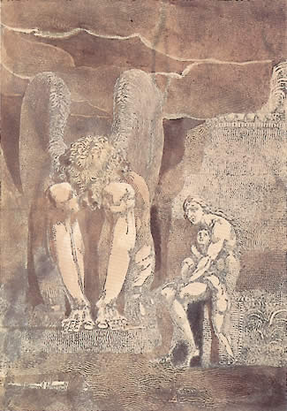
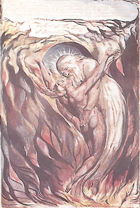
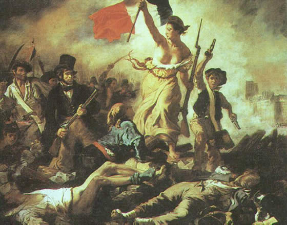
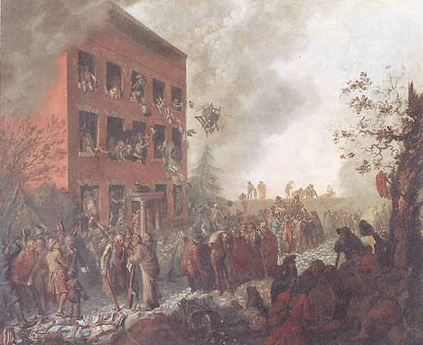
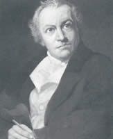
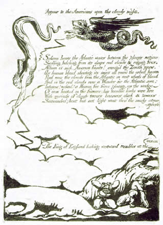

Reproduced from Norton Topics Online for classroom purposes and student annotation.
 Looking back to his early radical years from his conservative middle age, the English poet Robert Southey (1774–1843) declared that
few persons but those who have lived in it can conceive or comprehend what the memory of the French Revolution was, nor what a visionary world seemed to open upon those who were just entering it. Old things seemed passing away, and nothing was dreamt of but the regeneration of the human race. >>('The Correspondence of Robert Southey with Caroline Bowles, ed. Edward Dowden (Dublin, 1881), p. 52.')"
In the prologue to his successful play The Road to Ruin (1792), Thomas Holcroft predicted that the French Revolution would "fertilize a world, and renovate old earth!" And in The Prelude (1805), Wordsworth remembered the early years of the Revolution as a time when all Europe
was thrilled with joy,
France standing on the top of golden hours,
And human nature seeming born again. (6.340–42; NAEL 2.346)
Human nature regenerate in a world made new: this was the theme of many enthusiasts in England during the first four or five years after the outbreak of the French Revolution in 1789. These concepts are obviously theological. They originate in the apocalyptic and millennial passages of the Hebrew and Christian Scriptures, and their use indicates that for a number of British idealists, the early enthusiasm for the revolution had the momentum and excitement of a religious movement.
The term apocalypse, derived from the Greek word meaning "revelation," designates the disclosure, in the Bible, of God's providential design for the end of human history. In its fully developed form, an apocalypse is a prophetic vision, elaborately symbolic of the imminent events that will abruptly end the existing world order and replace it with a new and perfected condition both of humanity and of the world. The root elements of apocalypse are the concern of the Hebrew prophets with the catastrophic punishments to be visited upon Israel and its enemies in "the latter end of the days," as well as with the expectation of a Messiah, a deliverer from suffering in this disaster-ridden world. These elements are collected in the writings attributed to the prophet Isaiah, which foretell, after God has vented His wrath, the advent of a renovated world of ease, joy, and peace. "For, behold, I create new heavens and a new earth," in which "the wolf and the lamb shall feed together, and the lion shall eat straw like the bullock" (Isaiah 65.17–25). The Hebrew Bible also contains a full-fledged apocalypse, the Book of Daniel.
Passages predicting an imminent apocalypse occur in the New Testament, both in the Synoptic Gospels and in the Epistles of Paul. The New Testament then concludes with the most spectacular and intricately ordered of all apocalyptic prophecies, the Book of Revelation. A series of seven symbolic events signalize the conflict between the forces of Christ and of Antichrist, culminating in a prodigious violence in which the stars fall like ripe figs and the harvest of the earth is cast "into the great winepress of the wrath of God." (6.13). This fierce destruction, however, is a cleansing one, preparatory to the inauguration of the Kingdom of Christ on earth, which will last one thousand years — in Latin, a "millennium," from which are derived the terms "millennial" and "millenarian" to signify the belief in a blissful earthly condition at the end of history. At the end of the millennium, the forces of evil are loosed again and finally defeated, after which the original creation, its function in the divine plot accomplished, will pass away, to be replaced by a new creation and by a new Jerusalem that will reconstitute, for the deserving elect, the paradise that was lost at the Fall: "And there shall be no more death . . . neither shall there be any more pain: for the former things are passed away" (21.4).
 Two distinctive images occur persistently in later writings that derive from biblical apocalypses. One is the image of a sacred marriage that signifies the consummation of history. In Isaiah, the final redemption is figured as a marriage between the people of Israel and their land (62.2–5); in Revelation, it is figured as a marriage between Christ and the new, or purified, Jerusalem, "coming down from God out of heaven, prepared as a bride adorned for her husband" (21.2, 9–10). The second recurrent image represents the final condition of blessedness as a renovated heaven and earth. "For, behold," the Lord said to Isaiah, "I create new heavens and a new earth" (65.17, also 66.22). Thus also Revelation: "And I saw a new heaven and a new earth: for the first heaven and the first earth were passed away" (21.1, also 21.5).
 The apocalyptic and millennial books in the Bible are readily convertible into a scenario for political revolution, since they consist of an infallible text ordaining a necessary destruction of the forces of evil and guaranteeing the outcome of this violence in peace, plenty, and consummate happiness. In the Civil Wars in seventeenth-century England, for example, there were fervent apocalyptic expectations among radical parliamentary sects that were shared by Oliver Cromwell, as well as by John Milton. The late eighteenth century was another age of widespread apocalyptic expectation, when the promise of the American Revolution, followed by the greater and more radical expectations raised by the early years of the French Revolution, revived among a number of English Nonconforming sects the millenarian excitement of Milton and other seventeenth-century predecessors. "Hey for the New Jerusalem! The millennium!" Thomas Holcroft exulted in 1791. >>(See C. Kegan Paul, William Godwin: His Friends and Contemporaries (London, 1876), 1:69.) Preachers such as Richard Price, Joseph Fawcett, and Elhanan Winchester, as well as Joseph Priestley, who was not only a great chemist but a founder of the Unitarian Society, all interpreted the convulsions in France in terms of the prophecies in both the Hebrew and the Christian Scriptures. They thus invested the political events of the day with the explosive power of the great Western myth of apocalypse and expanded a local phenomenon into the expectation that humanity, everywhere, was at the threshold of an earthly paradise.
The phenomenon is of great literary importance because, during their formative period in the early 1790s, the first generation of Romantic poets incorporated in their poems a vision of the French Revolution as the early stage of the abrupt culmination of history, in which there will emerge a new humanity on a new earth that is equivalent to a restored paradise. In 1793, while still a student at Oxford, Robert Southey wrote Joan of Arc: An Epic Poem. In it Joan is granted a vision of a "blest age" in the future when, in a violent spasm not quite named the French Revolution, humanity shall "burst his fetters," and "Earth shall once again / Be Paradise". >>(Robert Southey, Joan of Arc (Bristol, 1796), book 9, lines 825–74.) In the Song of Liberty that he appended to The Marriage of Heaven and Hell in 1792, Blake represents a revolutionary "son of fire" moving from America to France and proclaiming an Isaian millennium: "Empire is no more! and now the lion & wolf shall cease" (NAEL 8, 2.122). In the short prophetic poems of revolution that he wrote in the early 1790s, Blake introduced the Giant Form that he names "Orc," the spirit of Energy that bursts out in total political and spiritual revolution. See also Blake's America: A Prophecy [1793], plates 6, 8, 16, and, for an earlier, nonsymbolic work on the events in France, The French Revolution. In 1793 Wordsworth concluded his Descriptive Sketches with the enthusiastic prophecy (which precisely matches the prophecy he attributed to the Solitary in his later poem The Excursion) that events following the French Revolution would fulfill the millennial prophecy of the Book of Revelation. In those happy early years of the revolution, Coleridge shared this expectation, in a historical sequence that he succinctly summarizes in his prose Argument of the plot of Religious Musings (1794) as "The French Revolution. Millennium. Universal Redemption. Conclusion."
Two decades later, the young Percy Shelley recapitulated the millenarian expectations of his older contemporaries. His early principles, Shelley said, "had their origin" in those views that "occasioned the revolutions of America and France." >> (Shelley\'s Prose, ed. D. L. Clark (Albuquerque, 1954), p. 67) Shelley's Queen Mab, which he began writing at nineteen, presents a vision of the woeful human past and the dreadful present, as preceding a blissful future "surpassing fabled Eden," of which most features are imparted from biblical millennialism.
Looking back in 1815, Thomas Noon Talfourd — an eminent jurist who was also a poet and playwright — analyzed the fashion in which the French Revolution had shaped the great literature of the age:
At one moment, all was hope and joy and rapture; the corruption and iniquity of ages seemed to vanish like a dream; the unclouded heavens seemed once more to ring with the exulting chorus of peace on earth and good-will to men. . . .
But "on a sudden" the "sublime expectation[s] were swept away" in "the terrible changes of this August spectacle." And an immediate effect "of this moral hurricane . . . this rending of the general heart" was "to raise and darken the imagination," and so to contribute "to form that great age of poetry which is now flourishing around us." >>("An Attempt to Estimate the Poetical Talent of the Present Age," Pamphleteer 5 (1815): 432–33.) Talfourd recognized the religious, apocalyptic nature of the enthusiasm and hopes evoked by the early years of the revolution; he recognized also, however, that the essential featureof the French Revolution as a cultural influence was that it had failed. The greatest poetry of the age was written not in the mood of revolutionary exaltation but in the mood of revolutionary disenchantment and despair, after the succession of disasters that began with the Reign of Terror in 1793–94. A number of the major Romantic poems, however, did not break with the formative past, but set out to salvage grounds for hope in a new and better world. That is, Romantic thought and imagination remained apocalyptic in form, but with a radical shift from faith in a violent outer transformation to faith in an inner moral and imaginative transformation — a shift from political revolution to a revolution in consciousness — to bring into being a new heaven and new earth.
 Joseph Priestley (1733–1804) was a Unitarian minister, political writer, philosopher, and scientist in the fields of psychology and chemistry (he popularized David Hartley's theory of association of ideas and is credited with the discovery of oxygen). His enthusiastic endorsement of the French Revolution led to the destruction of his house, library, and laboratory in Birmingham by rioters on the second anniversary of the Fall of the Bastille, July 14, 1791. Priestley emigrated to Pennsylvania shortly after publishing this sermon, whose full title is The Present State of Europe Compared with Antient Prophecies; A Sermon, Preached at the Gravel Pit Meeting in Hackney, February 28, 1794, Being the Day Appointed for a General Fast. Priestley interprets the events in France in terms of the prophecy in the Book of Revelation, with the revolutionary violence as prelude to "the millennium, of the future peaceable and happy state of the world."
If we can learn anything concerning what is before us, from the language of prophecy, great calamities, such as the world has never yet experienced, will precede that happy state of things, in which the "kingdoms of this world will become the kingdom of our Lord Jesus Christ." * * * And it appears to me highly probable, as I hinted in my last discourse on this occasion, that the present disturbances in Europe are the beginning of those very calamitous times. * * *
It is enough for us to know the certainty of these great events, that our faith may not fail on the approach of the predicted calamity, confident that it will have the happiest issue in God's own time. For the same being who foretold the evil which we shall see come to pass, has likewise foretold the good that is to follow it.
That the second coming of Christ will be coincident with the millennium, of the future peaceable and happy state of the world (which, according to all the prophecies, will take place after the restoration of the Jews), is evident from what Peter said, in his address to the Jews, on the occasion of his healing the lame man at the gate of the temple (Acts 3.19).
This great event of the late revolution in France appears to me, and many others, to be not improbably the accomplishment of the following part of the Revelation, chap. xi. 3: "And the same hour there was a great earthquake, and the tenth part of the city fell, and in the earthquake were slain of men (or literally, names of men) seven thousand, and the remnant were affrighted, and gave glory to God."
An earthquake, as I have observed, may signify a great convulsion, and revolution, in states; and as the Papal dominions were divided into ten parts, one of which, and one of the principal of them, was France, it is properly called a tenth part of the city, or of the mystical Babylon. And if by names of men, we understand their titles, such as those of the nobility, and other hereditary distinctions, all of which are now abolished, the accomplishment of the prediction will appear to be wonderfully exact. * * *
* * * What could have been more unexpected than the events of any one of the last four years, at the beginning of it? What a total revolution in the ideas, and conduct of a whole nation! What a total subversion of principles, what reverses of fortune, and what a waste of life! In how bloody and eventful a war are we engaged, how inconsiderable in its beginning, how rapid and wide in its progress, and how dark with respect to its termination! At first it resembled Elijah's cloud, appearing no bigger than a man's hand [1 Kings 18.44]; but now it covers, and darkens, the whole European hemisphere!
Now, whatever we may think, as politicians (and with us every man will have his own opinion, on a subject so interesting to us all) I would, in this place, admonish you not to overlook the hand of God in the great scene that is now opening upon us. Nothing can ever come to pass without his appointment, or permission; and then, whatever be the views of men, we cannot doubt, but that his are always wise, righteous, and good. Let us, therefore, exercise faith in him, believing that though "clouds and darkness are round about him, righteousness and judgment are for ever the habitation of his throne" [Psalms 97.2]. All those who appear in the theatre of public affairs, in the field, or the cabinet, both those whom we praise, and those whom we blame, are equally instruments in his hands, and execute all his pleasure. Let this reflection, then, in our cooler moments (and I hope we shall endeavour, in all the tumult of affairs, to make these as many as possible), lead us to look more to God, and less to man; and consequently, in all the troubles in which we may be involved, repose the most unshaken confidence in him, and thence "in patience possess our own souls" [Luke 21.19], especially when it is evident that it is wholly out of our power to alter the course of events. If we be careful so to live as to be at all times prepared to die, what have we to fear, even though, as the Psalmist says, the "earth be removed, and the mountains be carried into the midst of the sea?" [Psalms 46.2]. Whatever turn the course of things may take, it cannot then be to our disadvantage. What, then, should hinder our contemplating the great scene, that seems now to be opening upon us, awful as it is, with tranquillity, and even with satisfaction, from our firm persuasion, that its termination will be glorious and happy?
 The first book of William Blake's The French Revolution was set in type in 1791 but was never actually published (it survives in a single set of page proofs). It traces, largely without symbolism, the history of the revolution shortly before and just after the Fall of the Bastille (July 14, 1789). As the critic David Erdman describes it, "the revolutionary events of June and July are treated as a single Day of Judgment or Morning of Resurrection during which the dark night of oppression lingers and fades in the marble hall of the Old Order while the Sun of democracy rises above the city streets and the people's Assembly." >>(Blake: Prophet Against Empire, rev. ed. (Princeton: Princeton University Press, 1969). p. 165.) Blake's speaker in the extract here, the revolutionist and statesman Abbé Sieyès (1748–1793), addressed the French National Assembly, urging the withdrawal of troops from Paris, on July 6. The Abbé predicts the end of all forms of oppression (including black slavery, lines 213–16), and the coming of a millennial state in which "men walk with their fathers in bliss" (line 237).
 William Blake's America, connecting recent American history with current events in France, is dated 1793 but was drafted and revised over a period of several years. The speaker in plates 6 and 7 in the extract here is "Albion's Angel," a representation of the tyrant King George III, an advocate of Urizen, who is misconceived as the God of prohibition and oppression. The opponent of Urizen is Orc, "a figure who struggles against political oppression, sexual repression, and all rational constrictions and restrictions on energy." >>(The text is from Mary Lynn Johnson and John E. Grant, eds., Blake's Poetry and Designs (New York: Norton, 1979), p. 103.) In Europe: A Prophecy (1794), Orc, with a blare of the seventh trumpet of the Book of Revelation, descends into "vineyards of red France" to herald the day when the earth and its inhabitants will be resurrected in a burst of unbounded and lustful energy.
[PLATE 6]
[PLATE 7]
[PLATE 8]
{kind=link}
{kind=link}
{kind=link}
{kind=link}
{kind=link}
{kind=link}